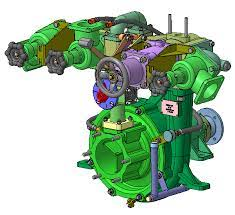

ПН-110
Сору патрубігінің диаметрі, мм=200
Қысым патрубігінің саны=9
Қысым патрубігінің диаметрі, мм=150
Жұмыс дөңгелегінің диаметрі, мм=630
Біліктің айналу жиілігі, об/мин=1320
Номиналды беру, л/с=110
Қысым, м=100
Сору биіктігі, м=7
Сорғыштың ПӘК=0,6
Тұтынылатын қуат, кВт=195
Вакуум-аппарат түрі =ГВА
Тудыратын сирету, МПа=0,077
Сору уақыты, с=70

ПН-110 өрт сорғышы ортадан тепкіш, бір сатылы консолды бағыттаушы апаратсыз. Сорғыш корпусы 1, алдыңғы қақпақ 10, сору патрубогі 9 және жұмыс дөңгелегі 7 шойыннан құйылған (СЧ24-44). Сорғыш корпусында 1 спиралды түрлі екі камерасы бар, оған қысым задвижкалары бекітіледі. Сорғыш валы 2 екі подшипникпен айналады—роликті сфералық 5 және шарикты 4. Подшипниктерді трансмиссионды автомобил майымен майлайды, оны сорғыш корпусының май ваннасына құяды. Валдың шлицті шетінде кардан валын қосу үшін фланец 3 орнатылды.
Жұмыс дөңгелегі 7 валда консольды түрде екі шпонкамен, қалпақты гайкамен және стопорлы шайбамен бекітіледі. Дөңгелектің есептік диаметрі 630 мм. Жұмыс дөңгелегін тығыздау үшін сорғыш корпусымен қақпағында орналасқан ауыспалы тығыздауыш 8 сақиналарда қолданады. Сорғыш валы 6 арнайы стаканда жиналған АСК-80 төрт резеңке каркас салниктармен тығыздалады. Салниктерді қалпақты масленкадан консистентті маймен майлайды.
Сорғыш полостарынан су сорғыш корпусының төменіңде орналасқан кран арқылы ағады 11. Қақпақта және корпуста қозғалтқышты қосымша суыту құбырларын қосу үшін орындар қарастырылады.
Қысым задвижкасы корпусы бар 4, онда осте резеңке прокладка арқылы клапан 1 бекітіледі. Корпус қақпағында 5 маховигі 6 бар шпиндель 8 орналасады.
Шпинделдің цилиндрлік бөлігі салникті толтырғышпен 7 тығыздалады, лақтырмалы гайкамен тығындалады. Шпинделдің төменгі бөлігінде резба бар, ол гайкада 9 қозғалысты қамтамасыз етеді. Гайка цапфалары 9 екі планка арқылы 3 және ось 2 задвижка клапанымен 1 байланысады. Сондықтан маховиктің айналуы және шпинделмен гайка қозғалғанда клапан ашылады немесе жабылады.
Орындаған:Агибаев Алдияр-Тж-21-В